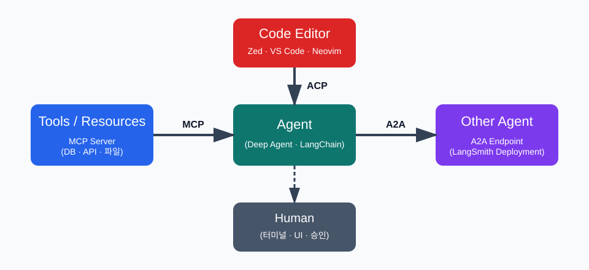
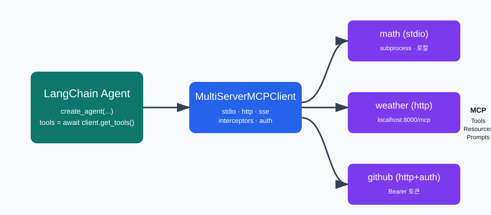
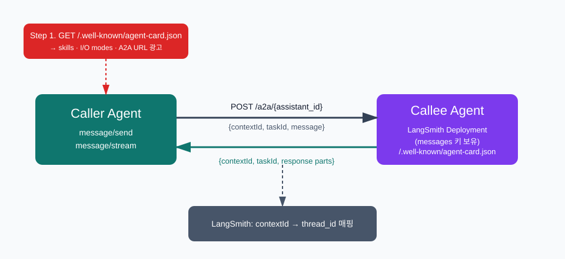
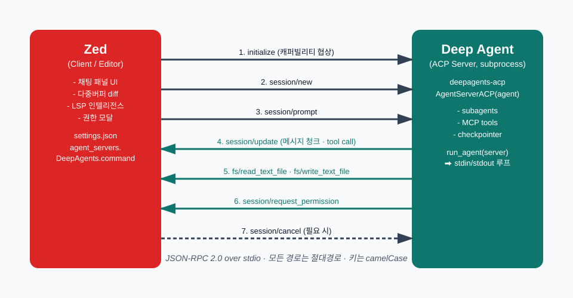
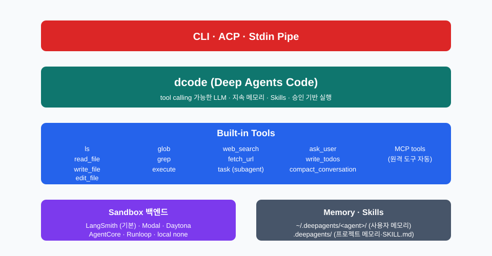

Protocols & Coding Agent
MCP는 도구를, A2A는 에이전트를, ACP는 에디터를 표준화한다
2주차에서 3주차로
| 2주차 | 3주차 |
|---|---|
| 메인 ↔ 서브에이전트 (내부) | 에이전트 ↔ 외부 세계 |
interrupt_on 으로 사람 승인 |
ACP 로 에디터가 게이트키퍼 |
task 도구로 위임 |
A2A 로 원격 에이전트 위임 |
| 직접 만든 도구 | MCP 로 표준 도구 연결 |
오늘의 한 문장: 세 프로토콜은 한 에이전트의 입·출구다.
누가 누구와 말하나

MCP=도구, A2A=에이전트, ACP=에디터. 같은 에이전트가 셋 다 동시에 쓴다.
MCP — 도구의 와이어 프로토콜
| 노출 항목 | 의미 |
|---|---|
| Tools | LLM 이 호출하는 함수 |
| Resources | LLM 이 읽는 데이터 (파일·레코드) |
| Prompts | 재사용 가능한 프롬프트 템플릿 |
한 번 MCP 서버로 만들면 LangChain·Claude Desktop·다른 에이전트 모두 같은 정의를 쓴다.
MCP 클라이언트 ↔ 서버

MultiServerMCPClient하나로 stdio·http MCP 서버를 한꺼번에 묶는다.
기본 코드
from langchain_mcp_adapters.client import MultiServerMCPClient
from langchain.agents import create_agent
client = MultiServerMCPClient({
"math": {"transport": "stdio", "command": "python",
"args": ["/abs/path/to/math_server.py"]},
"weather": {"transport": "http",
"url": "http://localhost:8000/mcp"},
})
tools = await client.get_tools()
agent = create_agent("claude-sonnet-4-6", tools)
기본은 stateless. stateful 필요하면
async with client.session("..."):.
인터셉터 — 런타임 맥락 주입
async def inject_user_context(request, handler):
runtime = request.runtime
return await handler(
request.override(
args={**request.args, "user_id": runtime.context.user_id}
)
)
client = MultiServerMCPClient({...},
tool_interceptors=[inject_user_context])
MCP 서버는 별도 프로세스 → 런타임을 모름. 인터셉터가 다리.
A2A — 에이전트 간 표준 호출
| 식별자 | 역할 |
|---|---|
contextId |
대화 스레드 (= LangSmith thread_id) |
taskId |
단일 요청 |
langgraph-api ≥ 0.4.21부터 배포된 그래프가 자동으로 A2A 엔드포인트를 갖는다.
노출되는 두 엔드포인트
| 메소드 · 경로 | 역할 |
|---|---|
GET /.well-known/agent-card.json?assistant_id={id} |
디스커버리 |
POST /a2a/{assistant_id} |
JSON-RPC (message/send · message/stream · tasks/get) |
그래프 상태에
messages키만 있으면 별도 코드 없이 동작.
A2A 호출 흐름

첫 호출에서 받은
contextId를 다음 호출에 그대로 넣어야 같은 스레드.
끄고 켜기
{
"$schema": "https://langgra.ph/schema.json",
"http": { "disable_a2a": true }
}
기본은 활성. 보안 정책상 필요하면
langgraph.json으로 끈다.
ACP — 에디터를 위한 표준
LSP 가 언어 지능을 IDE 에서 풀어냈듯, ACP 는 코딩 에이전트를 IDE 에서 풀어낸다.
| 항목 | MCP | A2A | ACP |
|---|---|---|---|
| 상대 | 도구 | 에이전트 | 에디터(IDE) |
| 전송 | http·stdio | http | stdio (기본) |
| 형식 | JSON-RPC | JSON-RPC | JSON-RPC |
라이프사이클

initialize→session/new→session/prompt→session/update(스트림)
도구·권한 메소드
| 메소드 | 방향 | 의미 |
|---|---|---|
fs/read_text_file |
Agent → Editor | 파일 읽기 요청 |
fs/write_text_file |
Agent → Editor | 파일 쓰기 요청 |
session/request_permission |
Agent → Editor | 사용자 승인 |
terminal/* |
Agent → Editor | 터미널 명령 |
에이전트가 직접 fs 를 만지지 않고 에디터에 부탁한다 = 에디터가 게이트키퍼.
Deep Agents 의 ACP 어댑터
from acp import run_agent
from deepagents import create_deep_agent
from langgraph.checkpoint.memory import MemorySaver
from deepagents_acp.server import AgentServerACP
agent = create_deep_agent(
model="google_genai:gemini-3.5-flash",
system_prompt="You are a helpful coding assistant",
checkpointer=MemorySaver(),
)
server = AgentServerACP(agent)
await run_agent(server)
pip install deepagents-acp→ stdin/stdout 루프로 에디터와 대화.
Zed 가 ACP 를 만든 이유
"LSP가 언어 지능을 모놀리식 IDE 에서 풀어냈듯, ACP 는 여러 에이전트를 IDE 변경 없이 갈아끼울 수 있게 한다." — Nathan Sobo, Zed
| 발단 | 결정 |
|---|---|
| Gemini CLI 팀이 Zed 터미널에서 작업 선호 | 터미널 escape 코드는 한계 |
| 외부 에이전트 통합이 매번 ad-hoc | 표준 JSON-RPC 엔드포인트 정의 |
| Zed 의 인하우스 에이전트도 같은 코드 경로 | 외부·내장 에이전트가 동일 UI 공유 |
Zed 에 외부 에이전트 등록
{
"agent_servers": {
"DeepAgents": {
"type": "custom",
"command": "/abs/path/to/deepagents/libs/acp/run_demo_agent.sh"
}
}
}
Zed 가 이 명령을 서브프로세스로 띄우고 stdio 로 ACP JSON-RPC.
ACP 가 만든 다대다 생태계
| 카테고리 | 사례 |
|---|---|
| 클라이언트 | Zed · VS Code (ACP Client) · JetBrains · Neovim · Emacs · Obsidian · Chrome · Unity · Toad |
| 에이전트 | Deep Agents · Claude Agent · Gemini CLI · Codex CLI · Cursor · Cline · OpenHands · Goose · Junie |
| SDK | Rust · TypeScript · Python · Java · Kotlin (Apache 2.0) |
"에디터는 그대로, 에이전트만 갈아끼우기" 가 가능해졌다.
Deep Agents Code — LangChain 의 코딩 에이전트
| 특징 | 설명 |
|---|---|
| 임의 LLM | Tool calling 만 되면 모두 |
| 지속 메모리 | 세션을 넘어 학습 유지 |
| Skills | SKILL.md 로 전문 지식 |
| 승인 기반 | 위험 도구는 사람 OK |
우리가 이번 시즌 내내 본 모든 패턴(서브에이전트·HITL·MCP)의 종합편.
dcode 스택

빌트인 도구 + 샌드박스 + 메모리 + Skills + ACP. 만들지 않아도 다 들어있다.
한 줄 설치, 한 줄 실행
curl -LsSf https://langch.in/dcode | bash
dcode --model anthropic:claude-opus-4-7
dcode -y --startup-cmd "ls -la" -m "Summarize this dir"
dcode -n "fix tests" -S "pytest,git,make" --max-turns 10
echo "Explain this code" | dcode
-y자동 승인,-n비대화,-S셸 화이트리스트.
승인 기본값
| 카테고리 | 도구 |
|---|---|
| 파일 쓰기 | write_file · edit_file |
| 셸 실행 | execute |
| 웹 작업 | web_search · fetch_url |
| 위임 · 압축 | task · compact_conversation |
2주차 HITL 의 모범 구현.
Shift+Tab으로 토글 가능.
한 그림으로
| 단계 | 프로토콜 |
|---|---|
| 외부 도구를 끌어옴 | MCP |
| 다른 에이전트와 협업 | A2A |
| 사람의 에디터로 들어감 | ACP |
| 그 위에서 코딩 작업 | Deep Agents Code |
따로 외울 게 아니라 한 에이전트의 입·출구.
마무리
| 프로토콜 | 한 줄 역할 |
|---|---|
| MCP | 도구를 표준 인터페이스로 |
| A2A | 에이전트를 외부 서비스처럼 |
| ACP | 에디터가 게이트키퍼 |
| dcode | 셋 다 쓰는 코딩 에이전트 |
표준은 단순함을 만들고, 단순함은 결합을 만든다.